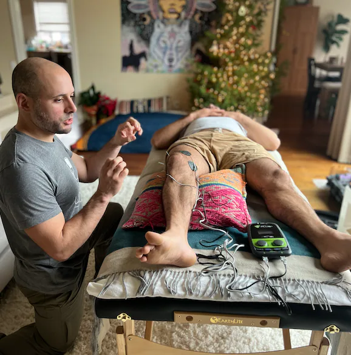

B883 · Lessons Learned: Progress Doesn't Have to Be a Struggle
Hi {first_name},
Progress feels DAMN good, AND doesn’t always need to be a struggle…It's been a long road, but progress on my right knee is finally happening.
Not long ago, I had a very honest conversation with Josh Trent on his podcast, Wellness+Wisdom, where I was open with knee issues I’ve been facing in recent years. Ever since that recording, I’ve been inspired to not only seek help but follow a recovery program that I was willing to stick to.
One important thing I realized is that I’ve been standing in my own way. I had this story in my head that healing and resolving the knee pain needed to be hard, long, and tedious.
In fact, I’ve held a similar story in many other areas as well, with the underlying theme being “things have to be hard” to be worthwhile or for me to “deserve” them.
Well, how much my knee has improved with such little hard “effort” has honestly been shocking to me.
Huge shoutout to my three main guys who have supported me in some way: Jonny Suarez, Justin Brien, and Brian Reynolds, and also the Marc Pro device (I’ll be sharing more on this unit in the near future). With each activity, I’ve literally been doing the minimum effective dose and just a few short minutes during the week, and WOW what an improvement.
 Jonny's pictured here, practicing TCM-Acupuncture, Justin's a Soma Therapist, and Brian's the TRE (tension & trauma release exercises) specialist.
What's been really refreshing is that progress doesn't always have to be a massive uphill battle. In fact, it can feel pretty effortless when you find the right approach. It's a big lesson I've learned and I'm thankful this has been my path.
This week on the Path Podcast, we're bringing on Jonny Suarez to dive deep into Men's Health and Hormone Optimization. If that's up your alley, you won't want to miss it.
Thanks for being there for me through this journey. Let's keep inspiring each other and lifting one another up.
- Mike |